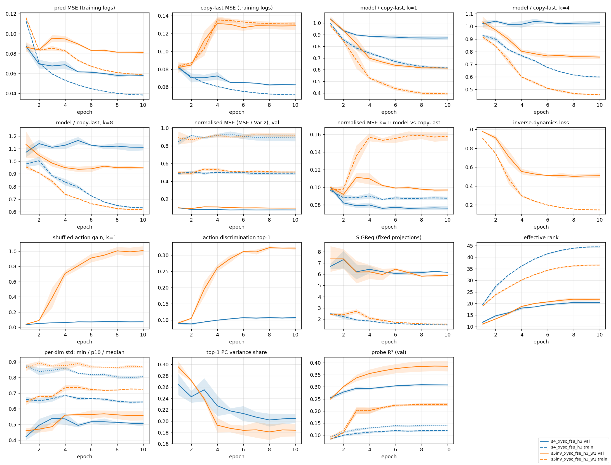
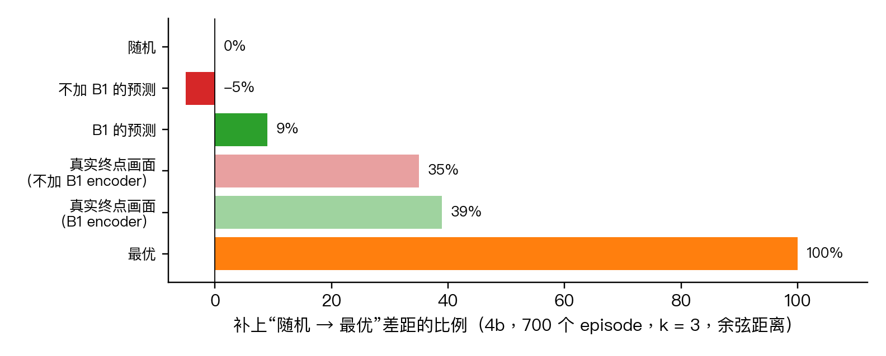
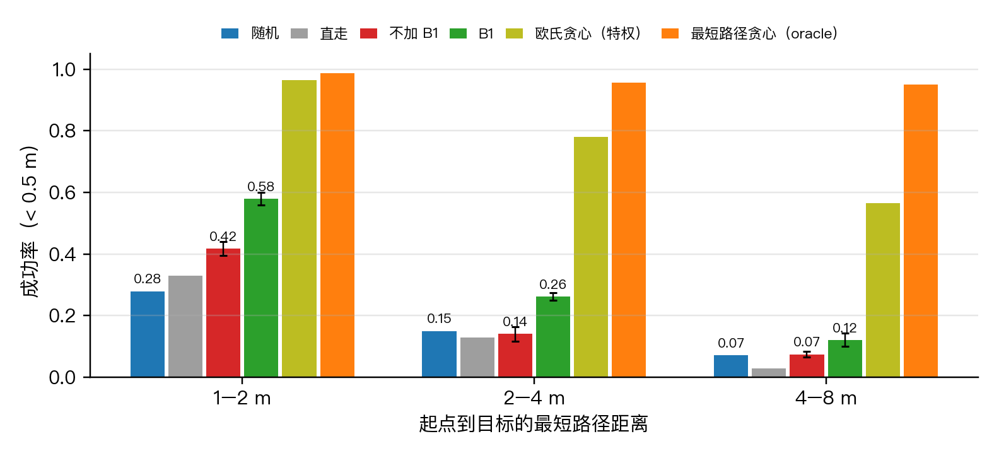
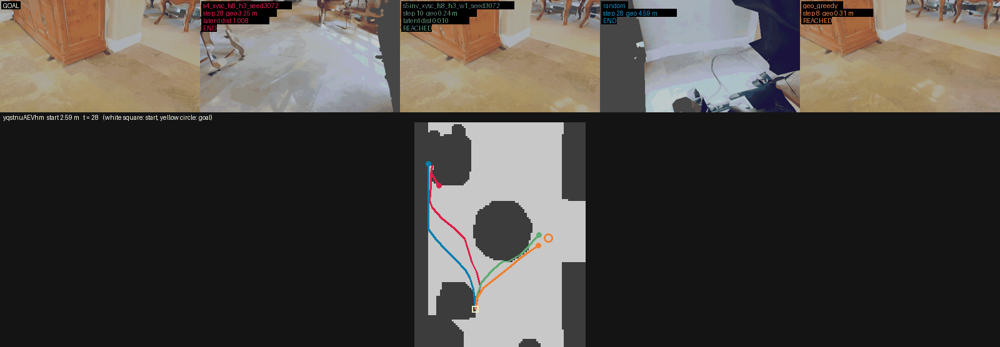
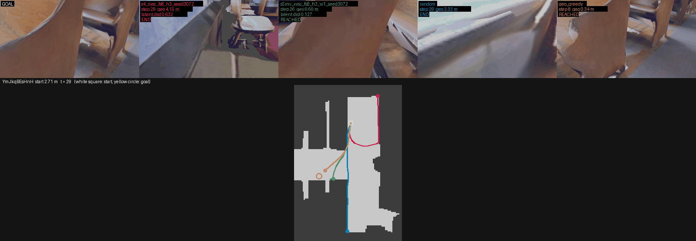
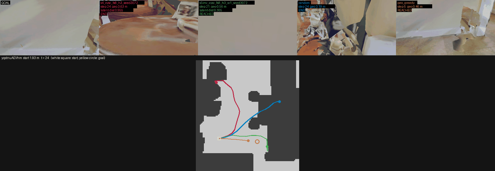
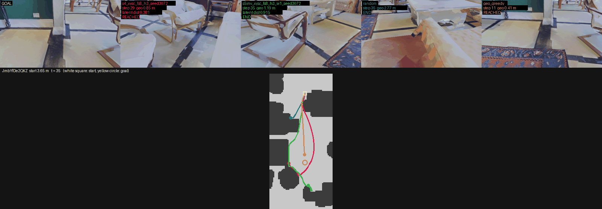

下表沿用上次反馈里的格式，最后一列是本阶段之后的状态。上次反馈指出：有客观的离线指标，但这些指标不能单独证明模型具有导航价值。本阶段补上了“收敛”和“导航”两行。
| 问题 | 10-30 报告中的证据 | 现在的证据（本报告） | 结论 |
|---|---|---|---|
| 能否预测未来 latent | B1 + xysc 单步 MSE / copy-last = 0.614 | 比值在 val 上已收敛；但归一化 MSE 显示 B1 的改善主要来自分母（第 2 节）。k=8 时归一化 MSE ≈ 0.9，多步预测信息量很少 | 单步可以，多步弱 |
| 是否使用动作 | 打乱动作后误差 +101% | 在模拟器里真实执行不同动作，B1 的打分与执行结果相关（ρ = 0.17），不加 B1 为 0.01（第 5 节） | 是（仅 B1） |
| 是否坍塌 | effective rank 21.9 / 192，最小每维 std 0.56 | 逐 epoch 跟踪：std、方差占比稳定，没有越来越多的维度变成常数；但新场景上 SIGReg 和 effective rank 明显差于训练场景（第 3 节） | 没有坍塌 |
| 训练是否收敛 | 只有第 10 个 epoch 的结果 | 10 个 epoch 的逐 epoch 曲线，3 个 seed；val 指标最后 3 个 epoch 变化 ≤ 3%（第 2 节） | val 上已收敛 |
| 能否帮助选动作 | 未验证 | 离线候选排序 + 模拟器分支排序：B1 好于随机，但只补上 9% 的差距（第 5 节） | 能，但很弱 |
| 能否帮助导航 | 未验证 | 闭环 MPC，7 个 val 场景 × 420 个 episode：近距离明显好于随机，远距离基本失败（第 6 节） | 近距离可以 |
设置。主配置固定为 xysc、fs8、H=3、MSE + SIGReg（λSIGReg=0.09），加 B1（反向动力学损失权重 1）和不加 B1 各 3 个 seed，训练 10 个 epoch。每个 epoch 的 checkpoint 都在同一批固定的 val clip（7 个 val 场景）和 train clip 上重新评估，见图 1。表中是 3 个 seed 的均值。
| 指标 | 不加 B1 epoch 7 → 10（val） | 不加 B1 train，epoch 10 | B1 epoch 7 → 10（val） | B1 train，epoch 10 |
|---|---|---|---|---|
| 预测 MSE（训练日志） | 0.060 → 0.058 | 0.038 | 0.083 → 0.081 | 0.059 |
| copy-last MSE（训练日志） | 0.064 → 0.062 | 0.051 | 0.129 → 0.129 | 0.131 |
| 模型 / copy-last，k = 1 | 0.872 → 0.871 | 0.616 | 0.628 → 0.614 | 0.393 |
| 模型 / copy-last，k = 4 | 1.021 → 1.028 | 0.600 | 0.770 → 0.757 | 0.461 |
| 模型 / copy-last，k = 8 | 1.116 → 1.110 | 0.632 | 0.961 → 0.948 | 0.618 |
| 归一化 MSE（MSE / Var z），k = 1 | 0.076 → 0.076 | 0.029 | 0.099 → 0.097 | 0.051 |
| 反向动力学损失（B1） | 0.512 → 0.510 | 0.172 → 0.146 |
收敛。val 上所有比值和归一化 MSE 在最后 3 个 epoch 的相对变化都在 3% 以内，曲线已经变平；val 误差没有回升。train 上的误差还在下降（B1 的反向动力学损失 7 → 10 epoch 降了 15%）。所以：
下降是否 make sense。encoder 也在训练，预测目标 zt+1 本身会变，所以要和 latent 的尺度一起看：

在同一批固定样本上，每个 checkpoint 记录下面的统计量。SIGReg 用固定的随机投影计算，避免投影不同带来的波动。第 10 个 epoch，3 个 seed 的均值：
| 指标 | 不加 B1 | B1 | 解读 |
|---|---|---|---|
| SIGReg，train / val | 1.47 / 6.18 | 1.55 / 5.89 | 训练场景上分布接近各向同性高斯；新场景上偏离大 4 倍 |
| effective rank，train / val（共 192 维） | 44.5 / 20.4 | 36.6 / 21.8 | 新场景的 latent 只占用一半的有效方向 |
| 每维 std，min / p10 / median（val） | 0.50 / 0.64 / 0.81 | 0.56 / 0.73 / 0.87 | 没有维度接近常数，而且随 epoch 稳定 |
| 第一主成分的方差占比（val） | 0.20 | 0.18 | 信息没有集中到一个方向 |
| 线性 probe R²：dx / dy / dθ（val） | 0.31 / 0.12 / 0.14 | 0.39 / 0.23 / 0.23 | B1 让 latent 里保留更多运动信息 |
| latent 距离与真实平面距离的 Spearman ρ（同一轨迹内） | 0.70 | 0.64 | latent 距离随真实距离单调增加，可以作为规划代价的起点 |
当前动作的定义。at = (Δx, Δy, Δθ) 是两个观测之间（间隔 8 个原始帧，fs8）在机器人坐标系下的相对位姿变化，不是速度命令 (v, ω)。训练数据的统计（train 集，fs8）：
Δt 和速度限制为什么确定不了。NavDP 原始数据（LeRobot v2.1 格式）里：info.json 写的是 fps = 30，但没有逐帧时间戳；total_frames 记为 304，parquet 实际只有 152 行，对不上；robot_type 为 unknown。所以既不能可靠地把 fs8 换算成秒，也不知道机器人的速度和角速度上限。队友那边也没有这部分信息。
| 量 | 当前含义 | 本阶段怎么处理 |
|---|---|---|
| k | world model 向前预测多少步 | 分支排序 k = 2、3；MPC 规划 3 步 |
| fs8 | 每一步跨过 8 个原始帧 | 固定 |
| Δt | 每一步真实执行多久 | 数据中无法确定；模拟器里不需要 |
| (v, ω) | 底层控制的线速度、角速度 | 未知；部署到真实机器人前需要确认 |
决定：动作就是相对 waypoint（一段圆弧），不转换成速度命令。在模拟器里，执行一个动作就是让机器人沿这段圆弧移动到新位姿（碰到障碍物时由 navmesh 处理并记为一次碰撞），然后渲染新画面，不需要知道 Δt。候选动作和 CEM 的搜索范围都限制在训练数据的 99% 范围内，并且和训练数据一样不包含原地转身和停止。部署到真实机器人时，再用 vmax、ωmax 把每段圆弧换算成执行时间，例如 Δt = max(s / vmax, |Δθ| / ωmax)，并确认机器人是否允许原地转弯。
没有为离散动作重新生成数据。上次的 disc / dbin 是把连续位移分箱，不等于真实的离散控制指令；本阶段只验证 continuous。
整体流程（第 5、6 节共用）：
现有轨迹只记录了专家实际走的那条路线，无法知道同一起点下其他动作的结果，所以需要模拟器做分支 rollout。我们把 Scene-N1 的 MP3D 网格转成 Habitat 场景，用数据集记录的位姿渲染画面，与同一位置的真实帧对比，校准了坐标变换、相机俯角（−30°）、视场角（68°）、光照和颜色（只在训练场景 JF19kD82Mey 上拟合）。
| val 场景 ARNzJeq3xxb，80 帧，B1 encoder 的 latent 余弦距离 | 与同一位置真实帧 | 与另一位置真实帧 |
|---|---|---|
| 原始渲染 | 0.729 | 0.794 |
| 校准后的渲染 | 0.042 | 0.727 |
| 参照：两张不同位置的真实帧 | 0.651 | |
在 7 个 val 场景的可行走区域上采样起点和目标（最短路径距离 1–3 m），共 700 个 episode。每个 episode 从同一起点在模拟器里真实执行 125 条候选（3 步，每步 0.294 m，转角 ∈ {0, ±0.15, ±0.35} rad），记录走完后到目标的最短路径距离（外部评价，不用模型自己的 latent 距离）。
| k = 3，余弦距离 | 选中候选走完后 到目标的距离 [m] | 比随机多前进 [m] | 补上“随机→最优” 差距的比例 | ρ（打分 vs 真实距离） | 选中的会碰撞 |
|---|---|---|---|---|---|
| 最优（oracle） | 1.409 | 0.271 | 100% | ||
| 欧氏距离启发式（知道坐标，作参照） | 1.421 | 0.259 | 96% | ||
| 随机 | 1.680 | 0 | 0 | 29% | |
| 不加 B1（3 seeds） | 1.693 ± 0.003 | −0.014 | −5% | 0.01 | 30% |
| B1（3 seeds） | 1.655 ± 0.006 | +0.024 | 9% | 0.17 | 27% |
B1 在 7 个场景里都好于随机（+0.004 … +0.039 m），起点越近优势越大（1.0–1.5 m 时 ρ = 0.30）。不加 B1 在 6 个场景里比随机略差。k = 2、MSE 距离的结论相同。离线实验（Stage 7，用真实未来帧当目标）的结论也一致：B1 在 k = 2–4 时选中误差比随机少 35%–37%，不加 B1 与随机相同。
同样 700 个 episode，所有表示都是 fs8、H=3、第 10 个 epoch、3 个 seed：
| 表示 | 不加 B1：选中候选 [m] | B1：选中候选 [m] | B1：ρ | 离线（Stage 7）B1 的选中误差 k = 4 [m]（随机 0.431） |
|---|---|---|---|---|
| xy | 1.691 | 1.656 | 0.15 | 0.297 |
| xyt | 1.693 | 1.655 | 0.17 | 0.281 |
| xysc | 1.693 | 1.655 | 0.17 | 0.282 |
| dbin（按 train 分位数分箱） | 1.668 | 0.11 | 0.301 | |
| disc（前进 / 左 / 右） | 1.685 | 1.682 | 0.03 | 0.387 |
| 随机 / 最优 | 1.680 / 1.409 | |||
把每条候选在模拟器里真实走完，用真实终点画面的 latent 打分。这相当于一个完美的预测器，排序的好坏只取决于“latent 距离”这个代价函数本身。

方法。每一步用 CEM 优化 3 步动作序列（300 个样本、30 个精英、3 次迭代，搜索范围限制在训练动作分布的 99% 以内），代价是第 3 步预测 latent 与目标 latent 的余弦距离；执行第一步，拿到新的真实观测后重新规划。在相同起终点上对比：

| 策略 | 1–2 m 成功率 / SPL | 2–4 m | 4–8 m | 1–2 m 自主停止成功率 / 停错率 | 1–2 m 每回合碰撞 |
|---|---|---|---|---|---|
| 随机 | 0.28 / 0.28 | 0.15 / 0.15 | 0.07 / 0.07 | 9.7 | |
| 直走 | 0.33 / 0.33 | 0.13 / 0.13 | 0.03 / 0.03 | 9.3 | |
| 不加 B1 | 0.42 / 0.39 | 0.14 / 0.13 | 0.07 / 0.07 | 0.10 / 0.29 | 7.8 |
| B1 | 0.58 / 0.56 | 0.26 / 0.25 | 0.12 / 0.12 | 0.25 / 0.30 | 6.1 |
| 欧氏距离贪心（特权） | 0.96 / 0.94 | 0.78 / 0.78 | 0.56 / 0.56 | 1.2 | |
| 最短路径贪心（oracle） | 0.99 / 0.96 | 0.96 / 0.93 | 0.95 / 0.94 | 0.6 |
7 个 val 场景，每个场景 3 个距离档 × 2 个 episode，一共录了 42 段视频（le-wm/nav/results/report/videos/，逐段结果见同目录的 README.md）。每段视频同时显示 4 个策略，从同一个起点出发：
挑选标准：起点距离 2 m 以上，B1 成功，而不加 B1 和随机都失败。42 段里符合的只有 2 段（例 1、例 2）；另外有 1 段起点 1.93 m，只差一点到 2 m（例 3）。再附 1 段反例（例 4）。表中括号里是途中离目标最近的距离；成功 = 途中到达 0.5 m 以内。
| 例子 | 起点 | 不加 B1 | B1 | B1 自主停止 | 随机 | oracle |
|---|---|---|---|---|---|---|
| 例 1：yqstnuAEVhm / bin2-4_ep1 | 2.59 m | 失败（2.02） | 成功（0.24） | 是 | 失败（2.23） | 成功（0.31） |
| 例 2：YmJkqBEsHnH / bin2-4_ep1 | 2.71 m | 失败（2.00） | 成功（0.46） | 否 | 失败（1.19） | 成功（0.34） |
| 例 3：yqstnuAEVhm / bin1-2_ep2 | 1.93 m | 失败（1.29） | 成功（0.31） | 否 | 失败（1.10） | 成功（0.46） |
| 例 4（反例）：JmbYfDe2QKZ / bin2-4_ep1 | 3.65 m | 成功（0.26） | 失败（0.62） | 否 | 失败（2.60） | 成功（0.41） |




怎么解读这些视频：
| 顺序 | 任务 | 状态 | 得到的结论 |
|---|---|---|---|
| ① | train / val MSE、copy-last 与多步误差曲线 | 完成 | val 上已收敛；问题是跨场景泛化，不是训练轮数 |
| ② | SIGReg、std、effective rank、probe | 完成 | 没有坍塌；B1 的比值改善主要来自 latent 尺度；新场景上表示质量明显下降 |
| ③ | 固定 continuous 配置，明确位姿、速度与时间 | 部分完成 | 动作 = 相对 waypoint，模拟器里不需要 Δt；真实机器人的 vmax、ωmax 和是否允许原地转弯仍需确认 |
| ④ | 候选动作排序 | 完成 | B1 能帮助选动作但信号弱（补上 9% 的差距）；连续表示 + B1 最好 |
| ⑤ | MPC 闭环 | 完成 | 1–2 m 成功率 58%（随机 28%），4–8 m 12% |
| ⑥ | 根据失败原因做针对性改进 | 待做 | 见下 |
下一步（按失败原因排序）：